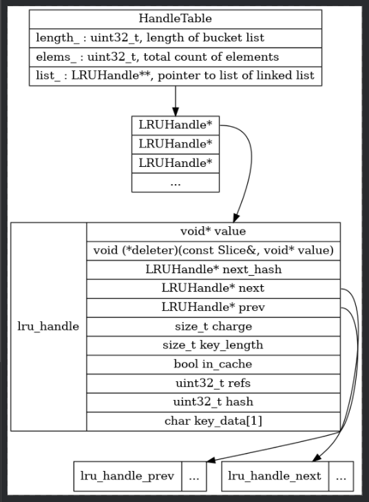
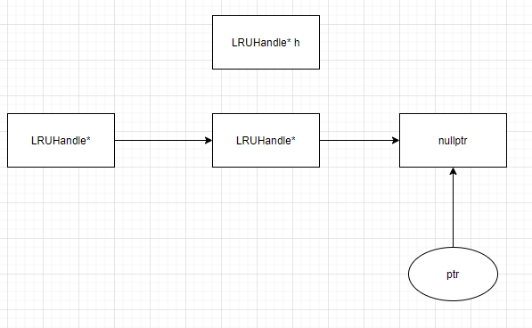
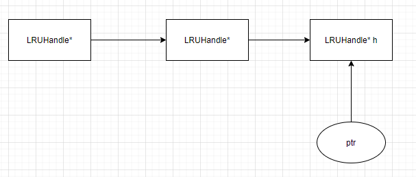

LevelDB (2) - cache 源码分析
LevelDB (2) – cache 缓存机制源码分析
LevelDB version 1.23
1. Module Information
util/cache.cc
2. Components
2.1 Components Overview
- struct
LRUHandle - class
HandleTable - class
LRUCache - class
SharedLRUCache
The overall relationship between them is shown in figure 1.

The struct LRUHandle is the basic node for the cache element linked list. The HandleTable contains a list of LRUHandle linked list. The LRUCache class is to implement cache logic using LRUHandle and HandleTable. Thus, the actual cache logic is inside LRUCache.
2.2 LRUHandle struct
2.2.1 Variable Explanation
| Field | Explanation |
|---|---|
value |
a void ptr to actual value address |
deleter |
a function ptr of deleting a node from linked list according key and value |
next_hash |
ptr to next node on linked list |
next |
ptr to next node on linked list |
prev |
ptr to previous node on linked list |
charge |
node size (opt?) |
key_length |
key length of current node |
in_cache |
if the node is in cache |
refs |
count of reference |
hash |
hash value of key; used for fast sharding and comparisons |
key_data |
address of beginning of the key |
2.2.2 Method Explanation
2.2.2.1 function Slice key() const - public
return the slice type of the key
2.3 HandleTable class
The linked list in HandleTable class is single way using next_hash field to link.
2.3.1 Variable Explanation
| Field | Explanation |
|---|---|
| length_ | length of the list_; number of linked list |
| elems_ | total count of nodes in the table |
| list_ | list of linked list |
2.3.2 Method Explanation
2.3.2.1 function LRUHandle** FindPointer(const Slice& key, uint32_t hash) - private
- locate the linked list on list of linked list according to hash value,
list_[hash & (length - 1)] - loop through the linked list from the head node
- check current node is
nullptror not - compare hash and key (
Slicetype) value - if not equal, get next_hash
- check current node is
- If not found, function return a ptr to last node’s
next_hashwhose value isnullptr. If found, return ptr to LRUHandle*
2.3.2.2 function void Resize() - private
The Resize() function is called during initialization of HandleTable and insertion when elem_ is larger than length_ of list of linked list.
- init
new_legnthto 4 - multiply
new_lengthby 2 whennew_lengthis smaller thanelem_ - new a list
new_listwith lengthnew_lengthholdingLRUHandle* - set all memory in new_list to 0
- loop through each linked list in
list_- if the first node in linked list is not
nullptr, rehash nodes on this linked list tonew_list
- if the first node in linked list is not
- delete
list_ - assign
new_listtolist_
2.3.2.3 function Insert( LRUHandle* h) - public
find h in the table
when h is not in the table, then the
LRUHandle** ptrwill point to an address withnullptrvalue.
put h ptr value to address
**ptr

- increment
elems_, ifelemes > length_, do resize. - when h is found with the key, it replaces found LRUHandle* with h.
2.3.2.4 function Remove( LRUHandle* h) - public
normal linked list remove operation.
2.4 LRUCache class
LRUCache class uses two head nodes, LRUHandle, to implement LRU cache. One for storing LRU element, the other is as cache list.
2.4.1 Variable Explanation
| Field | Type | Explanation |
|---|---|---|
| capacity_ | size_t |
cache capacity for storing LRUHandle |
| mutex_ | Port::Mutex |
a custom lock [[leveldb (a) – Port Lock]] |
| usage_ | size_t GUARDED_BY(mutex_) |
number of LRUHandle* node in cache |
| lru_ | LRUHandle GUARDED_BY(mutex_) |
head of lru list |
| in_use_ | LRUHandle GUARDED_BY(mutex_) |
head of lru cache list |
| table_ | HandleTable GUARDED_BY(mutex_) |
cache table |
2.4.2 Method Explanation
Initialization
- Make empty circular linked lists on value
lru_andin_use_seperately.
Destruction
- check if
in_use_points toin_use_.nextmaking sure there is no thread using it.for (LRUHandle* e = lru_.next; e != &lru_;) { LRUHandle* next = e->next; assert(e->in_cache); e->in_cache = false; assert(e->refs == 1); // Invariant of lru_ list. Unref(e); e = next; // avoid dangling ptr } - loop through
lru_list. unreference node fromin_use_list - the
LRUHandleonlru_must be in cache - reference count of
LRUHandlemust be 1, ensuring onlyLRUCacheis using. - Unreference it
- assign
nextto e avoiding dangling pointer
2.4.2.1 void LRU_Remove(LRUHandle* e)
void LRUCache::LRU_Remove(LRUHandle* e) {
e->next->prev = e->prev;
e->prev->next = e->next;
}LRUHandle* e is a linked list node.
2.4.2.2 void LRU_Append(LRUHandle* list, LRUHandle* e)
void LRUCache::LRU_Append(LRUHandle* list, LRUHandle* e) {
// Make "e" newest entry by inserting just before *list
e->next = list;
e->prev = list->prev;
e->prev->next = e;
e->next->prev = e;
}LRUHandle* list is the head of linked list.
2.4.2.3 void Ref(LRUHandle* e)
void LRUCache::Ref(LRUHandle* e) {
if (e->refs == 1 && e->in_cache) { // If on lru_ list, move to in_use_ list.
LRU_Remove(e);
LRU_Append(&in_use_, e);
}
e->refs++;
}2.4.2.4 void Unref(LRUHandle* e)
void LRUCache::Unref(LRUHandle* e) {
assert(e->refs > 0);
e->refs--;
if (e->refs == 0) { // Deallocate.
assert(!e->in_cache);
(*e->deleter)(e->key(), e->value);
free(e);
} else if (e->in_cache && e->refs == 1) {
// No longer in use; move to lru_ list.
LRU_Remove(e);
LRU_Append(&lru_, e);
}
}2.4.2.5 LRUCache::Insert(const Slice& key, uint32_t hash, void* value, size_t charge, void (*deleter)(const Slice& key, void* value))
- lock mutex_
- initialize LRUHandle
- assign value
- copy
Slicekey data toLRUHandlee->key_data
- if capacity is larger than 0, it means turning on caching
- append e to the head of
in_use_list - insert e into
HandleTabletable_and the insertion returnnullptr - the
nullptrreturned value passed in functionFinishErase
- append e to the head of
- else assign
nullptrto e->next - while
usage_is larger thancapacity_, remove the first node fromlru_and remove the node fromHandleTabletable_
2.4.2.6 void LRUCache::Erase(const Slice& key, uint32_t hash)
- erase element from
table_and remove the node from cache.
2.4.2.7 void LRUCache::Prune()
- remove all nodes from
lru_,table_andin_use_
2.4.2.8 bool FinishErase(LRUHandle* e)
- if e is not
nullptr- remove e from
lru_ - clear e memory using
deleterin functionUnref
- remove e from
GUARDED_BY
GUARDED_BY is an attribute on data members, which declares that the data member is protected by the given capability. Read operations on the data require shared access, while write operations require exclusive access.
EXCLUSIVE_LOCKS_REQUIRED
EXCLUSIVE_LOCKS_REQUIRED is an attribute on functions or methods,
which declares that the calling thread must have exclusive access to the given capabilities.
More than one capability may be specified. The capabilities must be held on entry to the function,
and must still be held on exit.
UNLOCK_FUNCTION
UNLOCK_FUNCTION declares that the function releases the given capability.
The caller must hold the capability on entry, and will no longer hold it on exit.
It does not matter whether the given capability is shared or exclusive.
LOCKS_EXCLUDED
LOCKS_EXCLUDED is an attribute on functions or methods, which declares that
the caller must not hold the given capabilities. This annotation is used to prevent deadlock.
Many mutex implementations are not re-entrant, so deadlock can occur
if the function in question acquires the mutex a second time